From neural networks to nature
Robust AI for climate action and biodiversity monitoring
Olof Mogren, RISE Research Institutes of Sweden
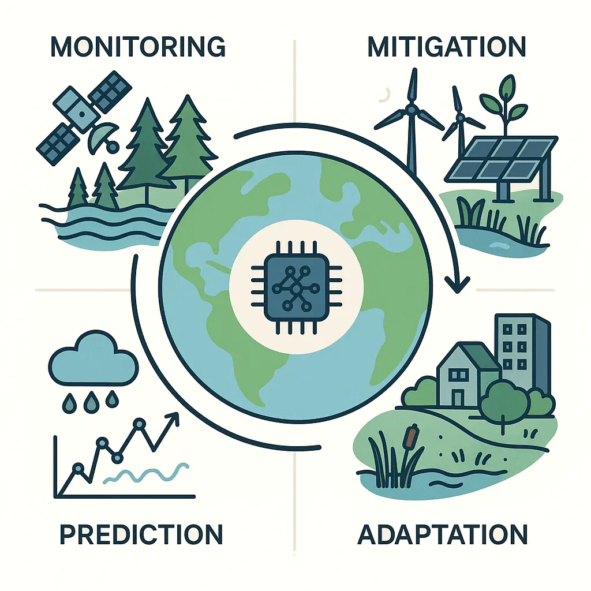
Climate change
A multifaceted challenge benefiting from AI at many levels
-
Monitoring
- remote sensing, sensor networks, bioacoustics
-
Mitigation
- Emission reduction and carbon sequestration
- Adaptation
- Prediction
- Weather systems and extreme events
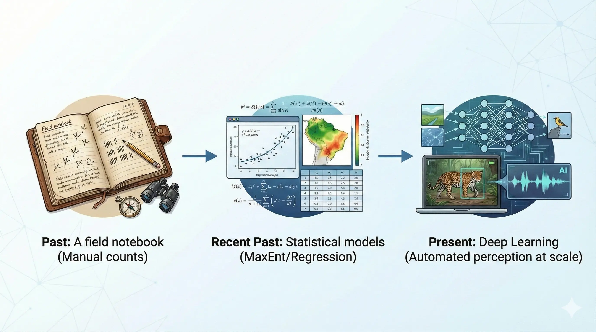
The evolution of ecological monitoring
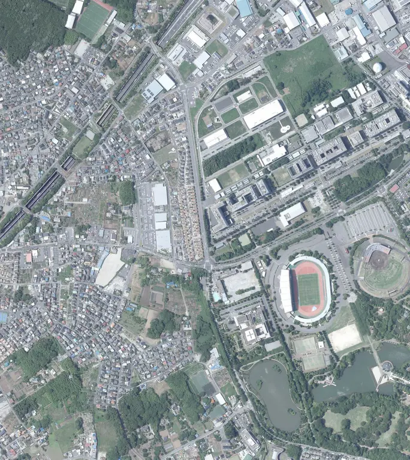
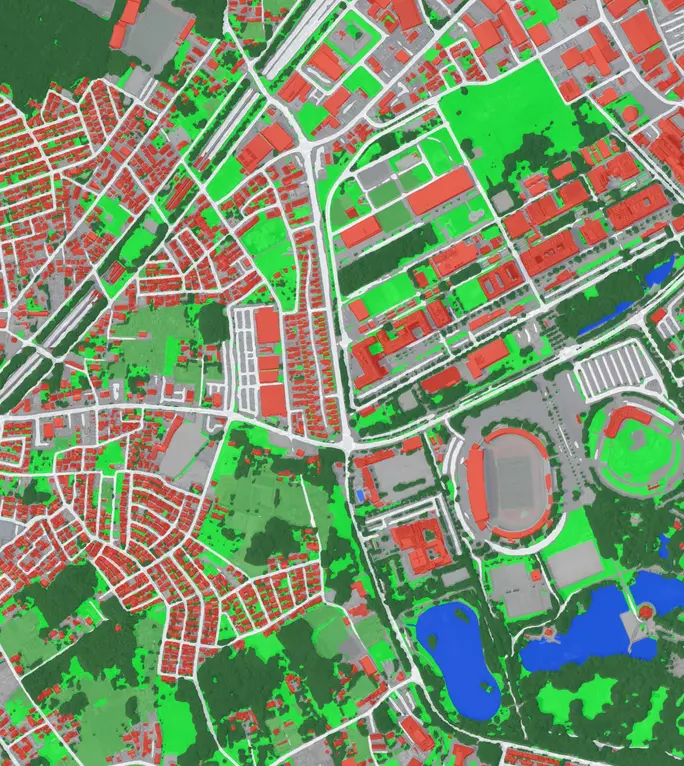
Remote sensing
(land use classification)
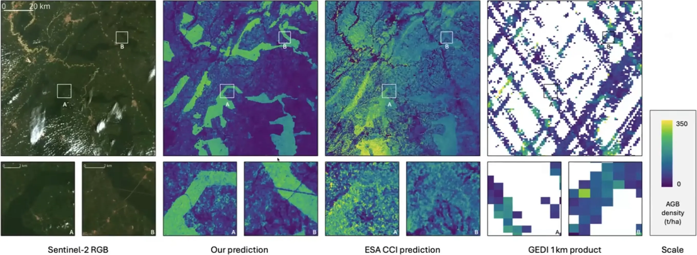
Above ground biomass estimation
with sparse annotations
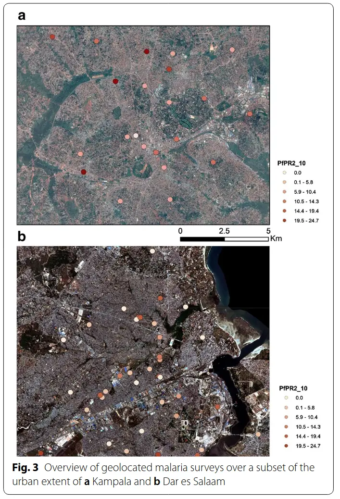

Remote sensing for deprived urban areas
Malaria mapping

Cloud thickness estimation
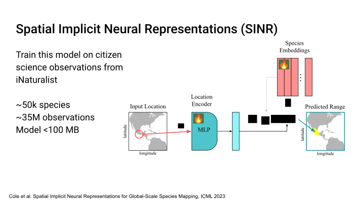

Species distribution modeling
- ~8.7M species, only ~100k have mapped ranges
- Traditional SDMs (e.g. MaxEnt, HMSC)
- need environmental covariates
- struggle at global scale
- Citizen science*: >10 000 000 presence-only observations
- Predicting ranges with only (lat,lon)
- Modelling using satellite data
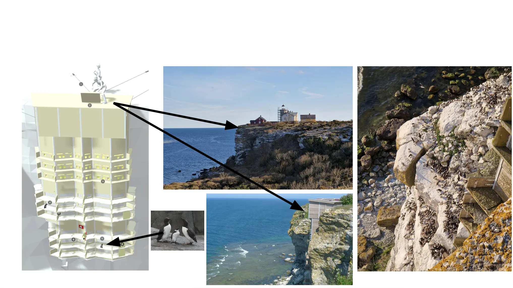
Auklab
Unique field site at Stora Karlsö

Letting data modalities inform each other
(Work in progress)
- Use vision models trained on synced video → provide event labels
- Transfer this knowledge to audio-only recordings
- Detect events and behaviours from soundscapes alone
- Reduce annotation workload by leveraging cross-modal supervision
- Unlock long-term monitoring where only audio data is available

Robustness
of state-of-the-art earth observation models

Indirect environmental effects of AI
- AI can make us more efficient
- Fast-fashion is already a burden to the environment
- Jevon's paradox/rebound effects
Learned location embeddings

Remote sensing for species distribution
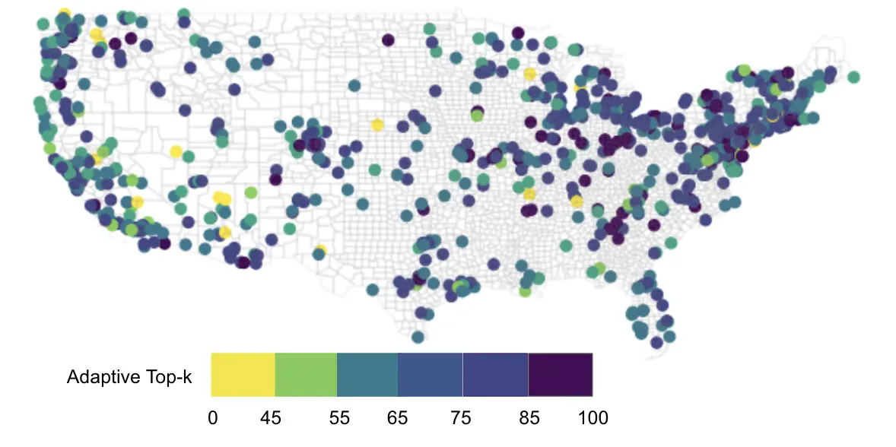
Remote sensing for species distribution
Satellite data + environmental variables better than either only sat or only env


 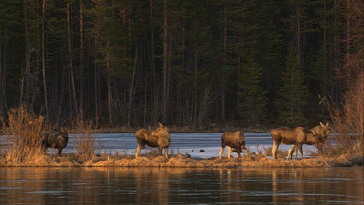
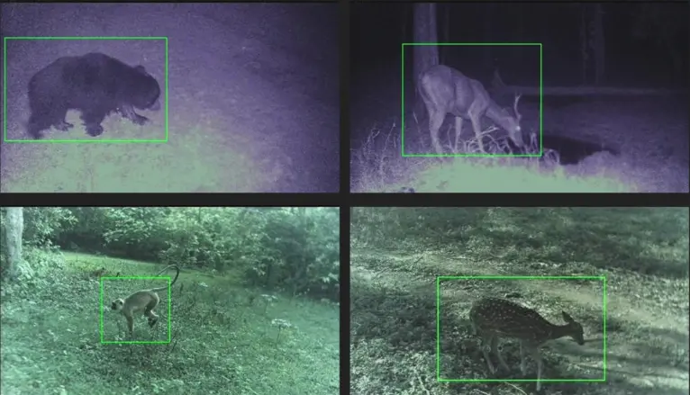
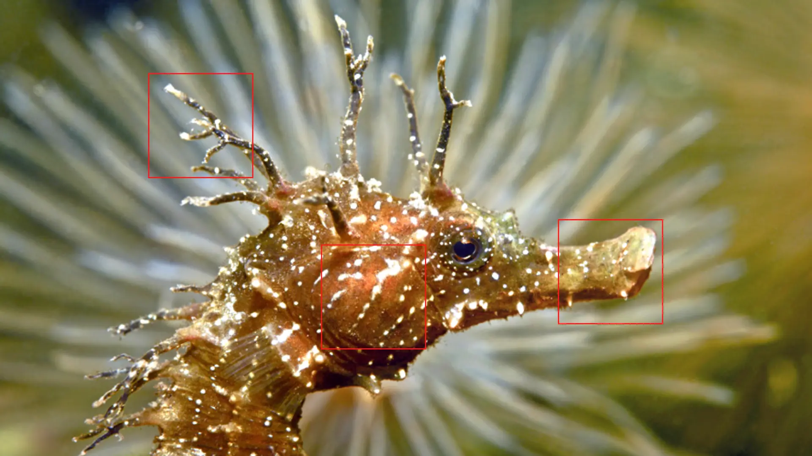
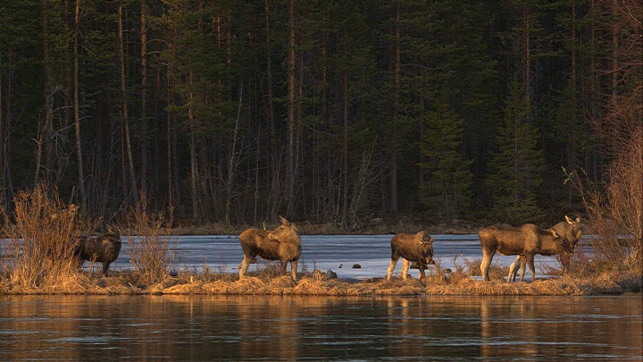
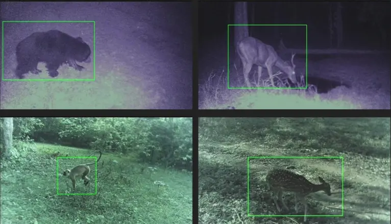
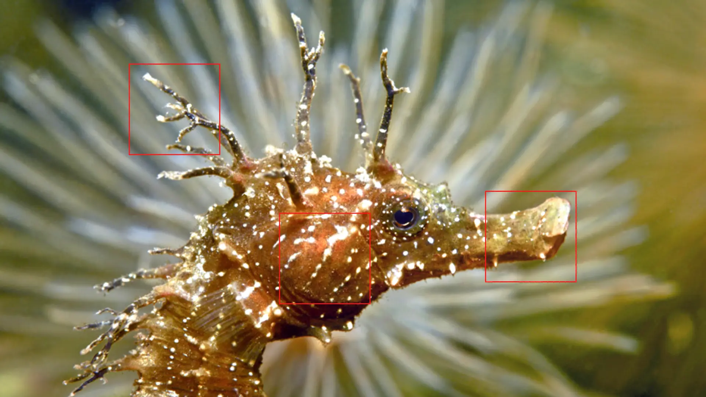